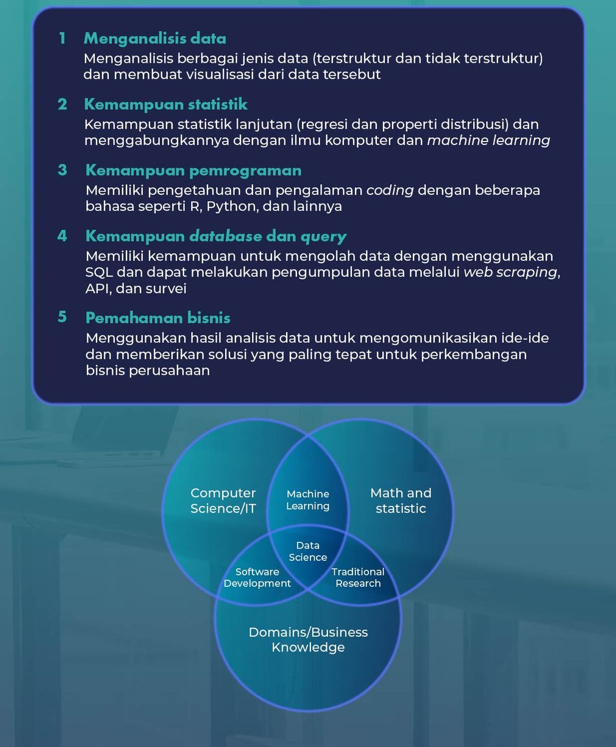

Data Science itu apa ya? Definisi, Tugas dan Skill yang Dibutuhkan
Seperti yang kamu ketahui, dunia bisnis kini semakin berkembang.
Sejalan dengan hal tersebut, penggunaan data dalam bisnis juga semakin dibutuhkan.
Berdasarkan World Economic Forum, data scientist termasuk 10 pekerjaan yang sangat dibutuhkan
pada tahun 2022. Jika dilihat dari namanya, pekerjaan ini tentu saja terkait dengan data.
Tetapi, apa itu sebenarnya data science? Data science adalah kemampuan untuk melakukan
pengolahan data dengan tujuan menciptakan strategi bisnis. Dalam dunia kerja,
orang yang memiliki kemampuan ini disebut sebagai data scientist. Nah,
jika kamu memiliki ketertarikan akan pengolahan data dan berniat menjadi seorang data scientist,
berikut penjelasannya.
Apa itu DataScinetist
Dikutip dari mastersindatascience.org, data scientist adalah pekerjaan dalam bentuk
penggabungan ilmu komputer (pemrograman), statistik, dan matematika yang bertujuan untuk
mengumpulkan, menafsirkan, dan menganalisis kumpulan data besar yang terstruktur
dan tidak terstruktur.
Seorang data scientist biasanya bekerja dalam tim untuk mengumpulkan berbagai data
dan informasi. Data tersebut digunakan untuk memprediksi perilaku pelanggan
dan mengidentifikasi peluang bisnis yang lebih baru. Pada praktiknya data scientist juga
melakukan eksperimen terhadap data-data yang telah dikumpulkan dengan maksud membuktikan
dan memberikan solusi yang paling tepat untuk perkembangan sebuah usaha atau bisnis.
Dalam struktur kerja, seorang data scientist umumnya melakukan laporan kerja kepada
pemimpin proyek/departemen, Chief Data Officer, atau kepala analytics dalam tim analisis
data yang lebih besar.
Tugas dan Tanggung jawab DataScinetist:
1. Mengidentifikasi sumber pengumpuilan data untuk kebutuhan bisnis.
2. Memproses, memberikan, dan mengintegrasikan data.
3. Mengumpulakn data otomatis dan proses manajemen.
4. Menganalisis data dalam jumlah besar untuk memperkirakan tren dan memberikan laporan
dengan rekomendasi.
5. Berkolanorasi dengan tim bisnis, teknik dan produk.
6. Mengembangkan mengimplementasikan, dan memelihara database.
7. Menyiapkan laporan untuk tim eksekutif dan proyek.
Skill yang dibutuhkan untuk menjadi seorang DataScinetist
Dalam melakukan berbagai aktivitas yang berhubungan dengan pengelolaan data,
kamu membutuhkan beberapa kemampuan berikut untuk dapat menjadi seorang data scientist
seperti,
1. Menganalisis Data
Kemampuan menganalisis data ini termasuk salah satu aspek utama ketika bekerja
sebagai data scientist. Bukan hanya sekedar menganalisis, kamu juga harus dapat
menghasilkan visualisasi data (penyajian data dalam format bergambar atau grafik
sehingga mudah dipahami dan dianalisis).
2. Kemampuan statistik
Secara sederhana, statistik yang digunakan dalam pekerjaan ini lebih kepada penggunaan
sampel dan populasi. Selain itu, data scientist juga menggunakan statistik dasar untuk
memberi gambaran pada data yang akan diolah dan dianalisis. Sehingga dapat menghasilkan
data yang sesuai dengan perencanaan (dibutuhkan perusahaan).
Sedangkan pada tahapan yang lebih tinggi, seorang data scientist harus memiliki
kemampuan matematika dan statistik lanjutan dan penerapannya pada machine learning.

3. Kemampuan Pemrograman
Salah satu kemampuan utama yang dibutuhkan sebagai data scientist adalah dapat
melakukan pemrograman dan menggunakan tools yang membantu dalam menganalisis data.
Kamu juga harus memiliki pengetahuan dan pengalaman coding dengan beberapa bahasa
seperti R, Python, dan lainnya. Adapun pemrograman dengan penggunaan bahasa seperti
python ini berfungsi untuk memudahkan para data scientist untuk mengatur atau
mengorganisir kumpulan data yang tidak terstruktur. Jika kamu ingin mempelajari
dasar-dasar pemrograman tersebut, kamu bisa langsung mengikuti kelasnya dengan
mengklik banner di bawah ini.
4. Kemampuan database, query (SQL), dan pengolahan data
Seorang data scientist membutuhkan SQL (Structured Query Language) untuk menangani
data terstruktur yang ada pada database sehingga menjadi lebih mudah.
Adapun hal ini juga termasuk pemahaman mengenai SQL commands seperti,
‑ Data query language
‑ Data Manipulation Language
‑ Data Definition Language
‑ Data Control Language
5. Pemahaman Bisnis
Selain pengetahuan akan teknis data, kamu juga harus memiliki pemahaman mengenai bisnis.
Sering kali seorang data scientist berada dalam diskusi atau rapat bisnis yang ditugaskan
untuk mengomunikasikan ide-ide kompleks dan membuat keputusan organisasi (perusahaan)
berdasarkan data.
Misalnya, perusahaan membutuhkan data dari minat audience/pelanggan terhadap produk yang
dihasilkan perusahaan. Berdasarkan data-data yang telah diolah, seorang data scientist
harus dapat mengomunikasikan secara baik mengenai kondisi pelanggan pada saat ini ataupun
di masa depan. Sehingga membuat perusahaan dapat menentukan langkah selanjutnya untuk
meningkatkan penjualan produk.
Source--